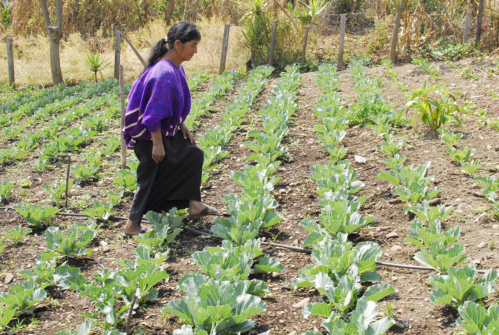
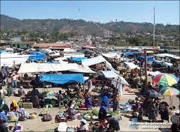

Economía
Chimaltenango por su constitución topográfica desarrolla una producción agrícola variada y abundante que proporciona excedentes que se comercializan en otros departamentos. Entre sus principales productos agrícolas están: El café de Pochuta, el frijol de Acatenango y Parramos, así como la caña de azúcar de calidad superior, maíz, trigo, hortalizas y frutas de todo clima. Entre su producción pecuaria, cuenta con ganadería de tipo vacuno, lanar, equino y porcino, de los cuales se pueden obtener productos lácteos y embutidos, así también, cuenta con la crianza de aves de corral. Entre su producción industrial cuenta con hilados, tejidos e industrias maquiladoras, igual a la deforestación de árboles. Las personas allí se dedican destacadamente a la agricultura, es más el trabajo del campo que otros tipos de labor, se dedican a la elaboración de artesanías y textiles.
La producción agrícola de Chimaltenago es variada: maíz, frijol, café, caña de azúcar, jengibre, trigo, avena, frutas, verduras, maderas finas y de construcción, plantas medicinales y tintorerías. En este departamento se cría ganado vacuno, caballar, lanar y porcino.
Actualmente existen importantes fábricas de hilados de algodón y lana, así como diversas industrias. En su territorio se localizan varias maquilas. También se produce una amplia cantidad de artesanías, tales como tejidos, cestería, cerámica, teja y ladrillo de barro, objetos de fibra vegetal, cerería, productos de cuero, pirotecnia e instrumentos musicales.
En este departamento también se forja hierro para producir balcones, faroles, tocadores, aldabones y lámparas. además de artesanías de oro, tales como pulseras, cadenas, anillos y dijes